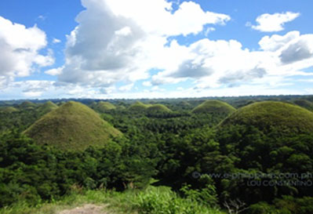
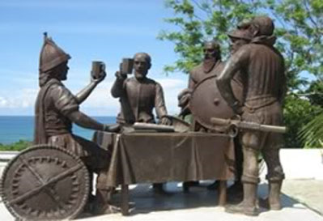
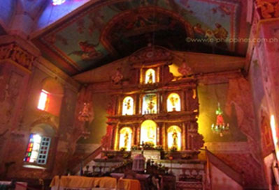
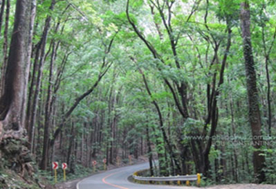
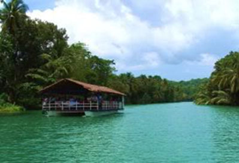
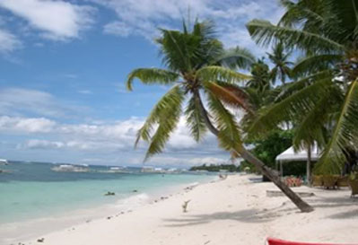
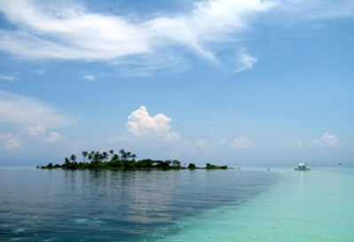
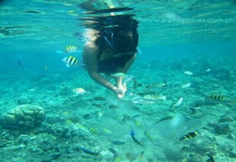
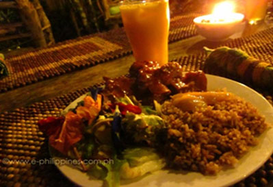

REGION VII : Central Visayas
BOHOL
Top Things to do

Chocolate Hills
This is Bohol’s first and foremost tourist attraction. Feast your eyes on the breathtaking work of nature that has been considered
as one of the wonders of the world. There are 1,268 haycock hills which turn brown during the dry season, giving it that chocolatey look.

Blood Compact Site
View the spot where the Spaniards and Filipinos fostered friendly relations through blood. This is considered as the first seed of the
United Nations and the first treaty between the brown and white race.

Baclayon Church
This is an old stone church with religious relics dating back to the early 16th century. It is considered as one of the oldest stone churches
in the Philippines.

Bilar Man-Made Forest
Feel the coolness of the air and view the awesome display of the thousands of mahogany trees painstakingly planted by the people.

Loboc-Loay River Cruise
Loay River Firefly Cruise is the newest attraction in Bohol. You will ride, not a cruise ship but a slow-moving unlit barge that will take you to a wider part of the river. The river sides only contains
mangroves gently moves with the cold wind giving it a romantic and magical backdrop where the dim light of the sky and the twinkling lights from the fireflies are the only illumination of the place.
- - Island Tour - -

Panglao Island tour
This island is famous for its quiet beaches, but notable locations include Dauis Church (with a well in front of its altar), Hinagdanan Cave, Panglao Church,
Watch Tower, and the market. This tour also includes dolphin and whale watching while aboard an early morning boat trip to scenic Pamilacan Island. Spinner dolphins are best seen after sunrise.

Pamilacan Island Tour
Pamilacan Island is home to about 11 species of whales and dolphins. Former male whale hunters are now being trained spotters. Prime dolphin- and whale-watching months are from March to June,
but resident dolphin and whale species can be found all year round. Tours are dependent on weather and sea conditions.
- - Dolphon Watching and Snorkeling - -

Balicasag Island
Bohol diving is considered to be one of the best in the world. The majority of diving in Bohol is conducted around the southwestern end of Bohol proper. The resort island of Panglao is a great base
for to set up and explore the numerous dive sites that abound the islands, including Balicasag, Pungtud, Gakang, and Pamilacan. A black coral forest is among its main attractions.
Balicasag is a small island that has a large marine sanctuary and is an excellent place for scuba diving and snorkeling with its clear blue waters an bountiful marine life.
- - Go on a FoodTrip - -
Loay River Firefly Cruise
Enjoy lunch while cruising and viewing the majestic panorama of nipa palm plantation along the banks of the river. Sometimes, wild ducks can be seen
feeding and swimming on the river.

Bohol Bee Farm
The Bohol Bee Farm is a secluded and rustic resort-cum-restaurant located in Panglao Island. They serve delicious, organic, healthy food in the restaurant as well as indulge your craving for Boholano delicacies
from their bakeshop. Local souvenirs are also available.